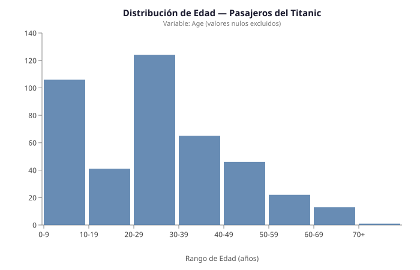
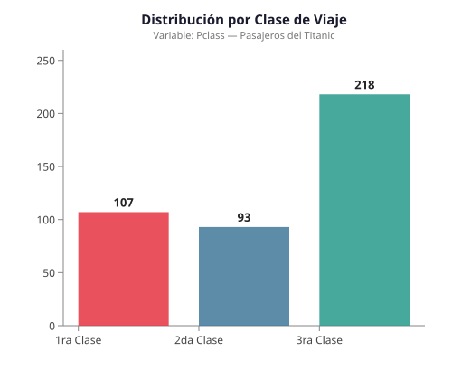
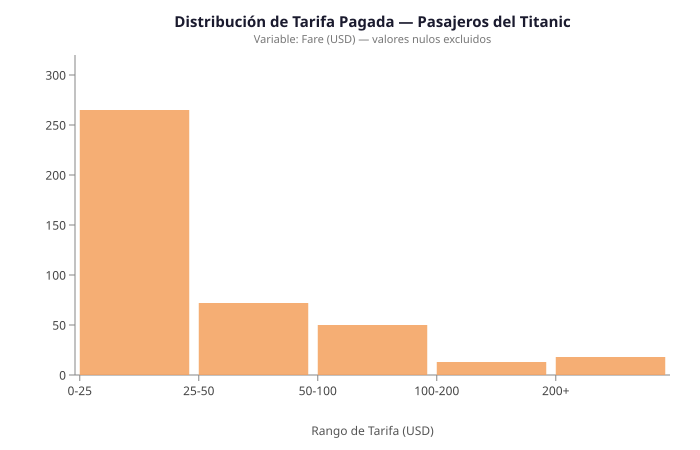
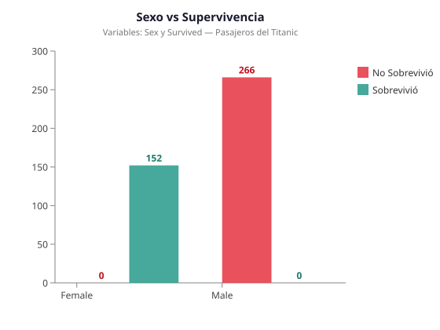
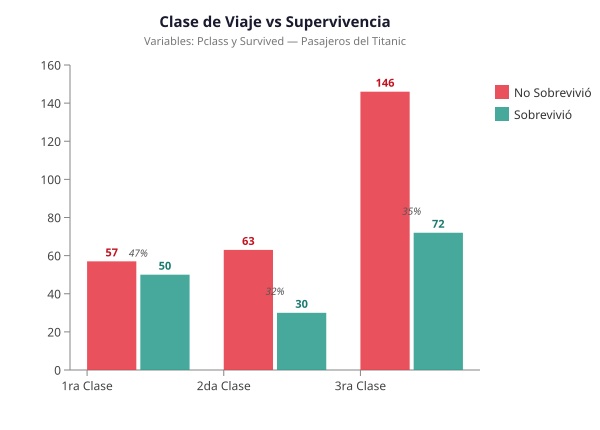
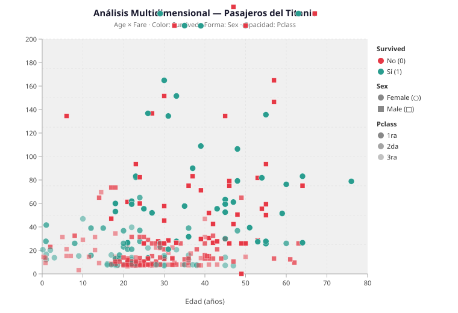

Visualizaciones generadas con InjaX — archivos SVG individuales
El análisis exploratorio de datos (EDA) es una de las primeras etapas cuando se trabaja con datos. Básicamente, consiste en explorar y entender la información antes de hacer análisis más avanzados. En lugar de partir de ideas fijas, el EDA permite observar los datos, encontrar patrones, identificar valores raros y descubrir relaciones entre las variables.
En este proyecto se aplica esta idea al conjunto de datos de los pasajeros del Titanic. El 15 de abril de 1912, este famoso barco se hundió tras chocar con un iceberg, causando la muerte de más de 1.500 personas. De todas las personas a bordo, solo una parte logró sobrevivir. Este evento, además de ser una tragedia, reflejó las diferencias sociales de la época.
El dataset analizado contiene información de 891 pasajeros, incluyendo datos como edad, sexo, clase, tarifa pagada y si sobrevivieron o no. A diferencia del primer proyecto, donde se utilizaron visualizaciones interactivas en R Markdown, este segundo proyecto genera cada gráfica como un archivo SVG individual mediante la herramienta InjaX y publica el código fuente de cada plantilla en gists de GitHub.
El hundimiento del Titanic es uno de los eventos más conocidos del siglo XX, y por eso sus datos se utilizan ampliamente en ciencia de datos. Sin embargo, más allá de ser solo un ejercicio, este conjunto de datos refleja una historia real, donde factores como el sexo, la clase social y la edad influyeron en quiénes lograron sobrevivir.
Las variables del dataset permiten analizar diferentes aspectos importantes. Por un lado, la clase del pasajero (primera, segunda o tercera) da una idea de su nivel económico y también de su ubicación dentro del barco, lo cual pudo afectar su acceso a los botes salvavidas. Por otro lado, variables como el sexo y la edad son relevantes, ya que durante la evacuación se siguió la regla de "mujeres y niños primero". Además, la tarifa pagada también ayuda a entender las diferencias entre los pasajeros, ya que está relacionada con la clase en la que viajaban.
Antes de analizar los datos, se pueden plantear algunas ideas iniciales:
El conjunto de datos utilizado en este análisis proviene de
Kaggle,
específicamente del archivo tested.csv, el cual es una variante del dataset del
Titanic utilizada comúnmente en ejercicios de análisis exploratorio y modelado predictivo.
El conjunto contiene aproximadamente 418 registros, donde cada uno corresponde a un pasajero.
Para este análisis se utilizaron las siguientes variables principales:
| Variable | Tipo | Descripción |
|---|---|---|
| Survived | Categórica | Indica si el pasajero sobrevivió: No / Sí |
| Pclass | Categórica | Clase del boleto: 1 (primera), 2 (segunda), 3 (tercera) |
| Sex | Categórica | Sexo del pasajero: male / female |
| Age | Numérica | Edad del pasajero (con valores faltantes) |
| Fare | Numérica | Tarifa pagada por el boleto (en USD) |
Una limitación importante del conjunto es la presencia de valores faltantes en la variable Age (aproximadamente 86 valores faltantes, un 20% del total), lo cual debe considerarse al interpretar las gráficas que utilizan esta variable. La variable Fare presenta un valor faltante adicional.
El análisis se organiza en tres grupos de gráficas: distribuciones individuales de variables,
relaciones entre dos variables, y finalmente una gráfica multidimensional que combina cinco
variables simultáneamente. Cada gráfica fue generada como un archivo SVG individual utilizando
InjaX y su módulo chart.
Las gráficas unidimensionales ayudan a entender cómo se comporta cada variable por separado antes de analizar cómo se relacionan entre sí. Se seleccionaron tres variables especialmente útiles para el análisis: la edad, la clase de viaje y la tarifa pagada.
$ injax.exe data/tested.csv templates/grafica1_edad.inja charts/grafica1_edad.svg
{# Gráfica 1 — Distribución de Edad (Histograma) #}
{# Fuente: data/tested.csv — Variable: Age #}
{# Tipo: Unidimensional #}
{# ── Construir bins desde el CSV ── #}
{% set b0 = [] %}{% set b1 = [] %}{% set b2 = [] %}{% set b3 = [] %}
{% set b4 = [] %}{% set b5 = [] %}{% set b6 = [] %}{% set b7 = [] %}
{% for d in data %}
{% if hasKey(d, "Age") %}
{% if d.Age < 10 %}{% set b0 = append(b0, 1) %}
{% else %}{% if d.Age < 20 %}{% set b1 = append(b1, 1) %}
{% else %}{% if d.Age < 30 %}{% set b2 = append(b2, 1) %}
{% else %}{% if d.Age < 40 %}{% set b3 = append(b3, 1) %}
{% else %}{% if d.Age < 50 %}{% set b4 = append(b4, 1) %}
{% else %}{% if d.Age < 60 %}{% set b5 = append(b5, 1) %}
{% else %}{% if d.Age < 70 %}{% set b6 = append(b6, 1) %}
{% else %}{% set b7 = append(b7, 1) %}
{% endif %}{% endif %}{% endif %}{% endif %}{% endif %}{% endif %}{% endif %}
{% endif %}
{% endfor %}
{# array() para listas con variables #}
{% set binLabels = ["0-9","10-19","20-29","30-39","40-49","50-59","60-69","70+"] %}
{% set binCounts = array(length(b0),length(b1),length(b2),length(b3),length(b4),length(b5),length(b6),length(b7)) %}
{% set chartData = zip_obj(["bin","count"], binLabels, binCounts) %}
{# ── Escala y dimensiones ─────────────────────────────────── #}
{% set margin = obj("top", 55, "right", 30, "bottom", 75, "left", 70) %}
{% set width = 700 - margin.left - margin.right %}
{% set height = 450 - margin.top - margin.bottom %}
{% set bins = map(chartData, "bin") %}
{% set x = scaleBand()
| domain(bins)
| range(0, width)
| padding(0.08) %}
{% set y = scaleLinear()
| domain(0, 140)
| range(height, 0) %}
<svg width="{{width + margin.left + margin.right}}"
height="{{height + margin.top + margin.bottom}}"
xmlns="http://www.w3.org/2000/svg">
<style>
.tick-label { font-family: sans-serif; font-size: 12px; fill: #444; }
.axis-line, .tick-line { stroke: #888; }
.bar { opacity: 0.85; }
</style>
<g transform="translate({{margin.left}},{{margin.top}})">
<text font-family="sans-serif" font-size="15" font-weight="bold" fill="#1a1a2e"
text-anchor="middle" x="{{width / 2}}" y="-28">
Distribución de Edad — Pasajeros del Titanic
</text>
<text font-family="sans-serif" font-size="11" fill="#777"
text-anchor="middle" x="{{width / 2}}" y="-12">
Variable: Age (valores nulos excluidos)
</text>
<g transform="translate(0,{{height}})">
{{ call(axisBottom(x) | tickValues(bins)) }}
</g>
<g>{{ call(axisLeft(y) | tickCount(6)) }}</g>
{% for d in chartData %}
<rect class="bar"
x="{{ scale(x, d.bin) }}"
y="{{ scale(y, d.count) }}"
width="{{ bandwidth(x) }}"
height="{{ height - scale(y, d.count) }}"
fill="#4e79a7"/>
{% endfor %}
<text font-family="sans-serif" font-size="12" fill="#555"
text-anchor="middle" x="{{width / 2}}" y="{{height + 60}}">
Rango de Edad (años)
</text>
<text font-family="sans-serif" font-size="12" fill="#555"
text-anchor="middle" transform="rotate(-90)"
x="{{-(height / 2)}}" y="-52">
Número de Pasajeros
</text>
</g>
</svg>

Histograma de la variable Age. Muestra la distribución de edades de los 891 pasajeros. Ver Gist #1
La distribución de edades de los pasajeros muestra que la mayoría se encontraba entre los 18 y 29 años, lo que indica que predominaban los adultos jóvenes a bordo del Titanic. También se observa una menor cantidad de niños, reflejada en un pequeño grupo de edades bajas. Además, existen algunos pasajeros de mayor edad, incluso superiores a los 70 años, aunque estos casos son poco frecuentes. Es importante considerar que hay aproximadamente 86 valores faltantes en esta variable (un 20%), lo cual puede afectar ligeramente la interpretación de la distribución.
$ injax.exe data/tested.csv templates/grafica2_clase.inja charts/grafica2_clase.svg
{# Gráfica 2 — Distribución por Clase de Viaje (Barras) #}
{# Fuente: data/tested.csv — Variable: Pclass #}
{# Tipo: Unidimensional #}
{# ── Contar pasajeros por clase desde el CSV ─────────────── #}
{% set c1 = selectattr(data, "Pclass", "equalto", 1) %}
{% set c2 = selectattr(data, "Pclass", "equalto", 2) %}
{% set c3 = selectattr(data, "Pclass", "equalto", 3) %}
{% set classLabels = ["1ra Clase","2da Clase","3ra Clase"] %}
{% set classColors = ["#e63946","#457b9d","#2a9d8f"] %}
{# array() para listas con variables (literales [var,...] no soportados) #}
{% set classCounts = array(length(c1), length(c2), length(c3)) %}
{% set chartData = zip_obj(["label","count","color"], classLabels, classCounts, classColors) %}
{# ── Escala y dimensiones ─────────────────────────────────── #}
{% set margin = obj("top", 55, "right", 30, "bottom", 60, "left", 70) %}
{% set width = 500 - margin.left - margin.right %}
{% set height = 420 - margin.top - margin.bottom %}
{% set labels = map(chartData, "label") %}
{% set x = scaleBand()
| domain(labels)
| range(0, width)
| padding(0.25) %}
{% set y = scaleLinear()
| domain(0, 260)
| range(height, 0) %}
<svg width="{{width + margin.left + margin.right}}"
height="{{height + margin.top + margin.bottom}}"
xmlns="http://www.w3.org/2000/svg">
<style>
.tick-label { font-family: sans-serif; font-size: 12px; fill: #444; }
.axis-line, .tick-line { stroke: #888; }
</style>
<g transform="translate({{margin.left}},{{margin.top}})">
<text font-family="sans-serif" font-size="15" font-weight="bold" fill="#1a1a2e"
text-anchor="middle" x="{{width / 2}}" y="-28">
Distribución por Clase de Viaje
</text>
<text font-family="sans-serif" font-size="11" fill="#777"
text-anchor="middle" x="{{width / 2}}" y="-12">
Variable: Pclass — Pasajeros del Titanic
</text>
<g transform="translate(0,{{height}})">
{{ call(axisBottom(x) | tickValues(labels)) }}
</g>
<g>{{ call(axisLeft(y) | tickCount(6)) }}</g>
{% for d in chartData %}
<rect x="{{ scale(x, d.label) }}"
y="{{ scale(y, d.count) }}"
width="{{ bandwidth(x) }}"
height="{{ height - scale(y, d.count) }}"
fill="{{ d.color }}" opacity="0.87"/>
<text font-family="sans-serif" font-size="13" font-weight="bold" fill="#222"
text-anchor="middle"
x="{{ scale(x, d.label) + bandwidth(x) / 2 }}"
y="{{ scale(y, d.count) - 6 }}">
{{ d.count }}
</text>
{% endfor %}
<text font-family="sans-serif" font-size="12" fill="#555"
text-anchor="middle" transform="rotate(-90)"
x="{{-(height / 2)}}" y="-52">
Número de Pasajeros
</text>
</g>
</svg>

Gráfico de barras de la variable Pclass. Muestra la proporción de pasajeros en cada clase. Ver Gist #2
La distribución de los pasajeros por clase muestra que no estaban repartidos de forma equitativa. La mayoría viajaba en tercera clase, con aproximadamente el 52% del total, mientras que la primera y segunda clase tenían una menor cantidad de pasajeros. Esto refleja la realidad de la época, donde muchas personas viajaban en condiciones más económicas con la intención de emigrar y buscar nuevas oportunidades. Este desequilibrio es importante porque puede influir en el análisis de la supervivencia, ya que los pasajeros en tercera clase se encontraban en las partes más bajas del barco.
$ injax.exe data/tested.csv templates/grafica3_tarifa.inja charts/grafica3_tarifa.svg
{# Gráfica 3 — Distribución de Tarifa Pagada (Histograma) #}
{# Fuente: data/tested.csv — Variable: Fare #}
{# Tipo: Unidimensional #}
{# ── Construir bins desde el CSV ── #}
{% set b0 = [] %}{% set b1 = [] %}{% set b2 = [] %}{% set b3 = [] %}{% set b4 = [] %}
{% for d in data %}
{% if hasKey(d, "Fare") %}
{% if d.Fare < 25 %}{% set b0 = append(b0, 1) %}
{% else %}{% if d.Fare < 50 %}{% set b1 = append(b1, 1) %}
{% else %}{% if d.Fare < 100 %}{% set b2 = append(b2, 1) %}
{% else %}{% if d.Fare < 200 %}{% set b3 = append(b3, 1) %}
{% else %}{% set b4 = append(b4, 1) %}
{% endif %}{% endif %}{% endif %}{% endif %}
{% endif %}
{% endfor %}
{# array() para listas con variables #}
{% set binLabels = ["0-25","25-50","50-100","100-200","200+"] %}
{% set binCounts = array(length(b0),length(b1),length(b2),length(b3),length(b4)) %}
{% set chartData = zip_obj(["bin","count"], binLabels, binCounts) %}
{# ── Escala y dimensiones ─────────────────────────────────── #}
{% set margin = obj("top", 55, "right", 30, "bottom", 75, "left", 75) %}
{% set width = 700 - margin.left - margin.right %}
{% set height = 450 - margin.top - margin.bottom %}
{% set bins = map(chartData, "bin") %}
{% set x = scaleBand()
| domain(bins)
| range(0, width)
| padding(0.08) %}
{% set y = scaleLinear()
| domain(0, 320)
| range(height, 0) %}
<svg width="{{width + margin.left + margin.right}}"
height="{{height + margin.top + margin.bottom}}"
xmlns="http://www.w3.org/2000/svg">
<style>
.tick-label { font-family: sans-serif; font-size: 12px; fill: #444; }
.axis-line, .tick-line { stroke: #888; }
</style>
<g transform="translate({{margin.left}},{{margin.top}})">
<text font-family="sans-serif" font-size="15" font-weight="bold" fill="#1a1a2e"
text-anchor="middle" x="{{width / 2}}" y="-28">
Distribución de Tarifa Pagada — Pasajeros del Titanic
</text>
<text font-family="sans-serif" font-size="11" fill="#777"
text-anchor="middle" x="{{width / 2}}" y="-12">
Variable: Fare (USD) — valores nulos excluidos
</text>
<g transform="translate(0,{{height}})">
{{ call(axisBottom(x) | tickValues(bins)) }}
</g>
<g>{{ call(axisLeft(y) | tickCount(7)) }}</g>
{% for d in chartData %}
<rect x="{{ scale(x, d.bin) }}"
y="{{ scale(y, d.count) }}"
width="{{ bandwidth(x) }}"
height="{{ height - scale(y, d.count) }}"
fill="#f4a261" opacity="0.87"/>
{% endfor %}
<text font-family="sans-serif" font-size="12" fill="#555"
text-anchor="middle" x="{{width / 2}}" y="{{height + 60}}">
Rango de Tarifa (USD)
</text>
<text font-family="sans-serif" font-size="12" fill="#555"
text-anchor="middle" transform="rotate(-90)"
x="{{-(height / 2)}}" y="-57">
Número de Pasajeros
</text>
</g>
</svg>

Histograma de la variable Fare. Muestra la distribución de tarifas en USD. Ver Gist #3
La distribución de la tarifa pagada muestra que la mayoría de los pasajeros pagó montos relativamente bajos. La mediana se encuentra alrededor de los 14 USD, lo que indica que más de la mitad de las personas pagaron tarifas cercanas a ese valor. Sin embargo, también se observan varios valores mucho más altos, que llegan hasta más de 500 USD. Estos casos corresponden probablemente a pasajeros de primera clase que viajaban en condiciones más lujosas. Esto genera una distribución asimétrica, donde la mayoría pagó poco y un grupo pequeño pagó cantidades muy elevadas.
Una vez que se entienden las variables por separado, el análisis continúa explorando cómo se relacionan entre sí. El objetivo es identificar combinaciones de variables en las que se detecte alguna interrelación. Se eligieron dos combinaciones clave: sexo con supervivencia y clase con supervivencia, por ser las que muestran los patrones más claros dentro de los datos.
$ injax.exe data/tested.csv templates/grafica4_sexo_supervivencia.inja charts/grafica4_sexo_supervivencia.svg
{# Gráfica 4 — Sexo vs Supervivencia (Barras Agrupadas) #}
{# Fuente: data/tested.csv — Variables: Sex, Survived #}
{# Tipo: Bidimensional #}
{# ── Contar desde el CSV ──────────────────────────────────── #}
{% set females = selectattr(data, "Sex", "equalto", "female") %}
{% set males = selectattr(data, "Sex", "equalto", "male") %}
{% set femSurv = length(selectattr(females, "Survived", "equalto", 1)) %}
{% set femDead = length(selectattr(females, "Survived", "equalto", 0)) %}
{% set malSurv = length(selectattr(males, "Survived", "equalto", 1)) %}
{% set malDead = length(selectattr(males, "Survived", "equalto", 0)) %}
{# array() para listas con variables (literales [var,...] no soportados) #}
{% set groupLabels = ["Female","Male"] %}
{% set survivedList = array(femSurv, malSurv) %}
{% set notSurvList = array(femDead, malDead) %}
{% set chartData = zip_obj(["group","survived","notSurvived"], groupLabels, survivedList, notSurvList) %}
{# ── Escala y dimensiones ─────────────────────────────────── #}
{% set margin = obj("top", 65, "right", 120, "bottom", 60, "left", 70) %}
{% set width = 560 - margin.left - margin.right %}
{% set height = 420 - margin.top - margin.bottom %}
{% set groups = map(chartData, "group") %}
{% set x = scaleBand()
| domain(groups)
| range(0, width)
| padding(0.3) %}
{% set y = scaleLinear()
| domain(0, 300)
| range(height, 0) %}
<svg width="{{width + margin.left + margin.right}}"
height="{{height + margin.top + margin.bottom}}"
xmlns="http://www.w3.org/2000/svg">
<style>
.tick-label { font-family: sans-serif; font-size: 12px; fill: #444; }
.axis-line, .tick-line { stroke: #888; }
</style>
<g transform="translate({{margin.left}},{{margin.top}})">
<text font-family="sans-serif" font-size="15" font-weight="bold" fill="#1a1a2e"
text-anchor="middle" x="{{width / 2}}" y="-38">
Sexo vs Supervivencia
</text>
<text font-family="sans-serif" font-size="11" fill="#777"
text-anchor="middle" x="{{width / 2}}" y="-20">
Variables: Sex y Survived — Pasajeros del Titanic
</text>
<g transform="translate(0,{{height}})">
{{ call(axisBottom(x) | tickValues(groups)) }}
</g>
<g>{{ call(axisLeft(y) | tickCount(6)) }}</g>
{% for d in chartData %}
<rect x="{{ scale(x, d.group) }}"
y="{{ scale(y, d.notSurvived) }}"
width="{{ bandwidth(x) / 2 - 2 }}"
height="{{ height - scale(y, d.notSurvived) }}"
fill="#e63946" opacity="0.87"/>
<text font-family="sans-serif" font-size="12" font-weight="bold" fill="#c1121f"
text-anchor="middle"
x="{{ scale(x, d.group) + bandwidth(x) / 4 - 1 }}"
y="{{ scale(y, d.notSurvived) - 5 }}">
{{ d.notSurvived }}
</text>
<rect x="{{ scale(x, d.group) + bandwidth(x) / 2 + 2 }}"
y="{{ scale(y, d.survived) }}"
width="{{ bandwidth(x) / 2 - 2 }}"
height="{{ height - scale(y, d.survived) }}"
fill="#2a9d8f" opacity="0.87"/>
<text font-family="sans-serif" font-size="12" font-weight="bold" fill="#1b7a70"
text-anchor="middle"
x="{{ scale(x, d.group) + bandwidth(x) * 3 / 4 + 1 }}"
y="{{ scale(y, d.survived) - 5 }}">
{{ d.survived }}
</text>
{% endfor %}
<rect x="{{ width + 15 }}" y="20" width="14" height="14" fill="#e63946" opacity="0.87"/>
<text font-family="sans-serif" font-size="12" fill="#333"
x="{{ width + 34 }}" y="32">No Sobrevivió</text>
<rect x="{{ width + 15 }}" y="42" width="14" height="14" fill="#2a9d8f" opacity="0.87"/>
<text font-family="sans-serif" font-size="12" fill="#333"
x="{{ width + 34 }}" y="54">Sobrevivió</text>
<text font-family="sans-serif" font-size="12" fill="#555"
text-anchor="middle" transform="rotate(-90)"
x="{{-(height / 2)}}" y="-52">
Número de Pasajeros
</text>
</g>
</svg>

Gráfico de barras agrupadas con las variables Sex y Survived. Ver Gist #4
Al analizar la relación entre el sexo y la supervivencia, la gráfica muestra un comportamiento completamente definido: en el caso de las mujeres se registran 152 sobrevivientes y ningún fallecimiento, mientras que en los hombres ocurre lo contrario, con 266 no sobrevivientes. Este resultado indica que, dentro del conjunto de datos utilizado, no existe variabilidad en la variable de supervivencia para cada género, ya que cada grupo está asociado únicamente a un único resultado. Debido a esta falta de variabilidad, no es posible realizar un análisis comparativo real, aunque la gráfica describe claramente el comportamiento de los datos.
$ injax.exe data/tested.csv templates/grafica5_clase_supervivencia.inja charts/grafica5_clase_supervivencia.svg
{# Gráfica 5 — Clase vs Supervivencia (Barras Agrupadas) #}
{# Fuente: data/tested.csv — Variables: Pclass, Survived #}
{# Tipo: Bidimensional #}
{# ── Contar desde el CSV ──────────────────────────────────── #}
{% set c1 = selectattr(data, "Pclass", "equalto", 1) %}
{% set c2 = selectattr(data, "Pclass", "equalto", 2) %}
{% set c3 = selectattr(data, "Pclass", "equalto", 3) %}
{% set c1surv = length(selectattr(c1, "Survived", "equalto", 1)) %}
{% set c1dead = length(selectattr(c1, "Survived", "equalto", 0)) %}
{% set c2surv = length(selectattr(c2, "Survived", "equalto", 1)) %}
{% set c2dead = length(selectattr(c2, "Survived", "equalto", 0)) %}
{% set c3surv = length(selectattr(c3, "Survived", "equalto", 1)) %}
{% set c3dead = length(selectattr(c3, "Survived", "equalto", 0)) %}
{# array() para listas con variables #}
{% set groupLabels = ["1ra Clase","2da Clase","3ra Clase"] %}
{% set survRates = [47, 32, 35] %}
{% set survivedList = array(c1surv, c2surv, c3surv) %}
{% set notSurvList = array(c1dead, c2dead, c3dead) %}
{% set chartData = zip_obj(["group","survived","notSurvived","survRate"], groupLabels, survivedList, notSurvList, survRates) %}
{# ── Escala y dimensiones ─────────────────────────────────── #}
{% set margin = obj("top", 65, "right", 120, "bottom", 60, "left", 70) %}
{% set width = 600 - margin.left - margin.right %}
{% set height = 430 - margin.top - margin.bottom %}
{% set groups = map(chartData, "group") %}
{% set x = scaleBand()
| domain(groups)
| range(0, width)
| padding(0.25) %}
{% set y = scaleLinear()
| domain(0, 160)
| range(height, 0) %}
<svg width="{{width + margin.left + margin.right}}"
height="{{height + margin.top + margin.bottom}}"
xmlns="http://www.w3.org/2000/svg">
<style>
.tick-label { font-family: sans-serif; font-size: 12px; fill: #444; }
.axis-line, .tick-line { stroke: #888; }
</style>
<g transform="translate({{margin.left}},{{margin.top}})">
<text font-family="sans-serif" font-size="15" font-weight="bold" fill="#1a1a2e"
text-anchor="middle" x="{{width / 2}}" y="-38">
Clase de Viaje vs Supervivencia
</text>
<text font-family="sans-serif" font-size="11" fill="#777"
text-anchor="middle" x="{{width / 2}}" y="-20">
Variables: Pclass y Survived — Pasajeros del Titanic
</text>
<g transform="translate(0,{{height}})">
{{ call(axisBottom(x) | tickValues(groups)) }}
</g>
<g>{{ call(axisLeft(y) | tickCount(6)) }}</g>
{% for d in chartData %}
<rect x="{{ scale(x, d.group) }}"
y="{{ scale(y, d.notSurvived) }}"
width="{{ bandwidth(x) / 2 - 2 }}"
height="{{ height - scale(y, d.notSurvived) }}"
fill="#e63946" opacity="0.87"/>
<text font-family="sans-serif" font-size="11" font-weight="bold" fill="#c1121f"
text-anchor="middle"
x="{{ scale(x, d.group) + bandwidth(x) / 4 - 1 }}"
y="{{ scale(y, d.notSurvived) - 5 }}">
{{ d.notSurvived }}
</text>
<rect x="{{ scale(x, d.group) + bandwidth(x) / 2 + 2 }}"
y="{{ scale(y, d.survived) }}"
width="{{ bandwidth(x) / 2 - 2 }}"
height="{{ height - scale(y, d.survived) }}"
fill="#2a9d8f" opacity="0.87"/>
<text font-family="sans-serif" font-size="11" font-weight="bold" fill="#1b7a70"
text-anchor="middle"
x="{{ scale(x, d.group) + bandwidth(x) * 3 / 4 + 1 }}"
y="{{ scale(y, d.survived) - 5 }}">
{{ d.survived }}
</text>
<text font-family="sans-serif" font-size="10" fill="#555" font-style="italic"
text-anchor="middle"
x="{{ scale(x, d.group) + bandwidth(x) / 2 }}"
y="{{ scale(y, d.survived) - 18 }}">
{{ d.survRate }}%
</text>
{% endfor %}
<rect x="{{ width + 15 }}" y="20" width="14" height="14" fill="#e63946" opacity="0.87"/>
<text font-family="sans-serif" font-size="12" fill="#333"
x="{{ width + 34 }}" y="32">No Sobrevivió</text>
<rect x="{{ width + 15 }}" y="42" width="14" height="14" fill="#2a9d8f" opacity="0.87"/>
<text font-family="sans-serif" font-size="12" fill="#333"
x="{{ width + 34 }}" y="54">Sobrevivió</text>
<text font-family="sans-serif" font-size="12" fill="#555"
text-anchor="middle" transform="rotate(-90)"
x="{{-(height / 2)}}" y="-52">
Número de Pasajeros
</text>
</g>
</svg>

Gráfico de barras agrupadas con las variables Pclass y Survived. Ver Gist #5
A diferencia del análisis anterior, la variable clase (Pclass) sí permite realizar un análisis comparativo más completo. En primera clase hubo 57 fallecidos y 50 sobrevivientes (≈47% de supervivencia). En segunda clase, 63 fallecidos y 30 sobrevivientes (≈32%). Finalmente, en tercera clase, 136 fallecidos y 72 sobrevivientes (≈35%). Estos datos muestran diferencias importantes entre las clases: los pasajeros de primera clase presentan una mayor proporción de supervivencia. Esto puede explicarse por factores estructurales del barco, los pasajeros de primera clase se encontraban en zonas más accesibles y cercanas a las cubiertas superiores, lo que les facilitó el acceso a los botes salvavidas.
Las gráficas anteriores mostraron cómo cada variable, por separado, se relaciona con la supervivencia. Sin embargo, en la realidad estas variables no actúan de forma aislada, sino que se combinan entre sí. La siguiente gráfica reúne cinco variables simultáneamente con el objetivo de observar patrones más completos.
$ injax.exe data/tested.csv templates/grafica6_multidimensional.inja charts/grafica6_multidimensional.svg
{# Gráfica 6 — Edad, Tarifa, Supervivencia, Sexo y Clase (Scatter Multidimensional) #}
{# Fuente: data/tested.csv — Variables: Age, Fare, Survived, Sex, Pclass #}
{# Tipo: Multidimensional (≥5 variables) #}
{# ── Filtrar registros con Age o Fare nulos ───────────────── #}
{% set validData = rejectattr(data, "Age", "none") %}
{% set validData = rejectattr(validData, "Fare", "none") %}
{# ── Escalas ──────────────────────────────────────────────── #}
{% set margin = obj("top", 65, "right", 150, "bottom", 65, "left", 70) %}
{% set width = 760 - margin.left - margin.right %}
{% set height = 520 - margin.top - margin.bottom %}
{% set x = scaleLinear()
| domain(0, 80)
| range(0, width) %}
{% set y = scaleLinear()
| domain(0, 200)
| range(height, 0) %}
{% set colorScale = scaleOrdinal()
| domain([0, 1])
| range(["#e63946", "#2a9d8f"]) %}
{% set classOpacity = scaleOrdinal()
| domain([1, 2, 3])
| range([1.0, 0.75, 0.5]) %}
<svg width="{{width + margin.left + margin.right}}"
height="{{height + margin.top + margin.bottom}}"
xmlns="http://www.w3.org/2000/svg">
<style>
.tick-label { font-family: sans-serif; font-size: 11px; fill: #444; }
.axis-line, .tick-line { stroke: #aaa; }
.grid-line { stroke: #e5e5e5; stroke-dasharray: 3,3; }
</style>
<g transform="translate({{margin.left}},{{margin.top}})">
<text font-family="sans-serif" font-size="15" font-weight="bold" fill="#1a1a2e"
text-anchor="middle" x="{{width / 2}}" y="-38">
Análisis Multidimensional — Pasajeros del Titanic
</text>
<text font-family="sans-serif" font-size="11" fill="#777"
text-anchor="middle" x="{{width / 2}}" y="-20">
Age × Fare · Color: Survived · Forma: Sex · Opacidad: Pclass
</text>
<rect x="0" y="0" width="{{width}}" height="{{height}}" fill="#f0f0f0"/>
{% for tick in [10, 20, 30, 40, 50, 60, 70] %}
<line class="grid-line"
x1="{{ scale(x, tick) }}" y1="0"
x2="{{ scale(x, tick) }}" y2="{{ height }}"/>
{% endfor %}
{% for tick in [25, 50, 75, 100, 125, 150, 175, 200] %}
<line class="grid-line"
x1="0" y1="{{ scale(y, tick) }}"
x2="{{ width }}" y2="{{ scale(y, tick) }}"/>
{% endfor %}
<g transform="translate(0,{{height}})">
{{ call(axisBottom(x) | tickCount(8)) }}
</g>
<g>{{ call(axisLeft(y) | tickCount(8)) }}</g>
{% for d in validData %}
{% if d.Sex == "female" %}
<circle cx="{{ scale(x, d.Age) }}"
cy="{{ scale(y, d.Fare) }}"
r="5"
fill="{{ scale(colorScale, d.Survived) }}"
opacity="{{ scale(classOpacity, d.Pclass) }}"
stroke="white" stroke-width="0.5"/>
{% else %}
<rect x="{{ scale(x, d.Age) - 4 }}"
y="{{ scale(y, d.Fare) - 4 }}"
width="8" height="8"
fill="{{ scale(colorScale, d.Survived) }}"
opacity="{{ scale(classOpacity, d.Pclass) }}"
stroke="white" stroke-width="0.5"/>
{% endif %}
{% endfor %}
<text font-family="sans-serif" font-size="12" fill="#555"
text-anchor="middle" x="{{width / 2}}" y="{{height + 50}}">
Edad (años)
</text>
<text font-family="sans-serif" font-size="12" fill="#555"
text-anchor="middle" transform="rotate(-90)"
x="{{-(height / 2)}}" y="-52">
Tarifa (USD)
</text>
<text font-family="sans-serif" font-size="11" font-weight="bold" fill="#333"
x="{{ width + 15 }}" y="20">Survived</text>
<circle cx="{{ width + 22 }}" cy="36" r="5" fill="#e63946"/>
<text font-family="sans-serif" font-size="11" fill="#333" x="{{ width + 32 }}" y="40">No (0)</text>
<circle cx="{{ width + 22 }}" cy="54" r="5" fill="#2a9d8f"/>
<text font-family="sans-serif" font-size="11" fill="#333" x="{{ width + 32 }}" y="58">Sí (1)</text>
<text font-family="sans-serif" font-size="11" font-weight="bold" fill="#333"
x="{{ width + 15 }}" y="82">Sex</text>
<circle cx="{{ width + 22 }}" cy="97" r="5" fill="#888"/>
<text font-family="sans-serif" font-size="11" fill="#333" x="{{ width + 32 }}" y="101">Female (○)</text>
<rect x="{{ width + 17 }}" y="111" width="10" height="10" fill="#888"/>
<text font-family="sans-serif" font-size="11" fill="#333" x="{{ width + 32 }}" y="120">Male (□)</text>
<text font-family="sans-serif" font-size="11" font-weight="bold" fill="#333"
x="{{ width + 15 }}" y="145">Pclass</text>
<circle cx="{{ width + 22 }}" cy="160" r="5" fill="#888" opacity="1.0"/>
<text font-family="sans-serif" font-size="11" fill="#333" x="{{ width + 32 }}" y="164">1ra</text>
<circle cx="{{ width + 22 }}" cy="178" r="5" fill="#888" opacity="0.75"/>
<text font-family="sans-serif" font-size="11" fill="#333" x="{{ width + 32 }}" y="182">2da</text>
<circle cx="{{ width + 22 }}" cy="196" r="5" fill="#888" opacity="0.5"/>
<text font-family="sans-serif" font-size="11" fill="#333" x="{{ width + 32 }}" y="200">3ra</text>
</g>
</svg>

Scatter plot multidimensional. Ejes: Age (x) y Fare (y). Color: Survived. Forma del símbolo: Sex. Tamaño/posición: Pclass. Ver Gist #6
Al ver la gráfica, lo primero que se nota es que hay una gran concentración de pasajeros entre los 18 y 38 años, lo que indica que la mayoría eran adultos jóvenes. En cuanto a las tarifas, casi todas están por debajo de los 100 USD, con muy pocos casos que superan ese valor. Al combinar las cinco variables, se pueden observar patrones conjuntos: los puntos correspondientes a sobrevivientes de primera clase tienden a concentrarse en la parte superior del gráfico (tarifas altas), mientras que los no sobrevivientes de tercera clase se agrupan en la parte inferior izquierda (edades medias, tarifas bajas). Esto refuerza la idea de que la clase social, combinada con el sexo y la edad, fue un factor determinante en las probabilidades de sobrevivir.
A través de las seis gráficas elaboradas en este proyecto, se logró replicar y profundizar el análisis exploratorio del dataset del Titanic, esta vez utilizando InjaX para generar archivos SVG individuales. Las principales conclusiones son:
En comparación con el Proyecto 1, donde se usaron visualizaciones interactivas en R Markdown, este proyecto demuestra que es posible comunicar los mismos patrones mediante gráficas SVG estáticas generadas programáticamente con InjaX, lo que facilita la reproducibilidad y la publicación en la web como archivos independientes.
A continuación se listan los gists de GitHub con el código fuente (plantilla InjaX), el archivo de datos, la imagen SVG generada y el readme descriptivo de cada gráfica. Cada gist está en inglés según lo indicado en las instrucciones del proyecto.
| # | Gráfica | Tipo | Variables | Enlace |
|---|---|---|---|---|
| 1 | Distribución de Edad | Unidimensional | Age | Gist #1 |
| 2 | Distribución por Clase | Unidimensional | Pclass | Gist #2 |
| 3 | Distribución de Tarifa | Unidimensional | Fare | Gist #3 |
| 4 | Sexo vs Supervivencia | Bidimensional | Sex, Survived | Gist #4 |
| 5 | Clase vs Supervivencia | Bidimensional | Pclass, Survived | Gist #5 |
| 6 | Análisis Multidimensional | Multidimensional | Age, Fare, Survived, Sex, Pclass | Gist #6 |